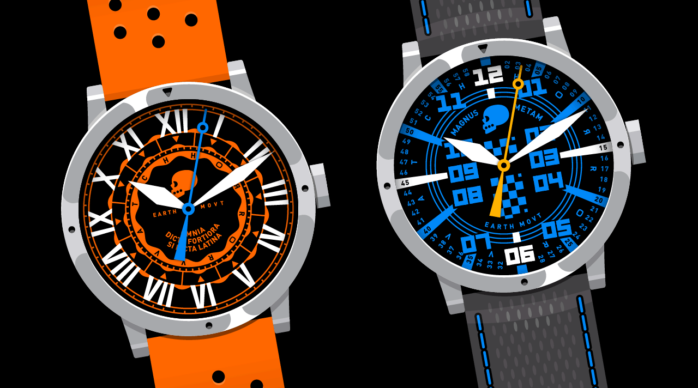
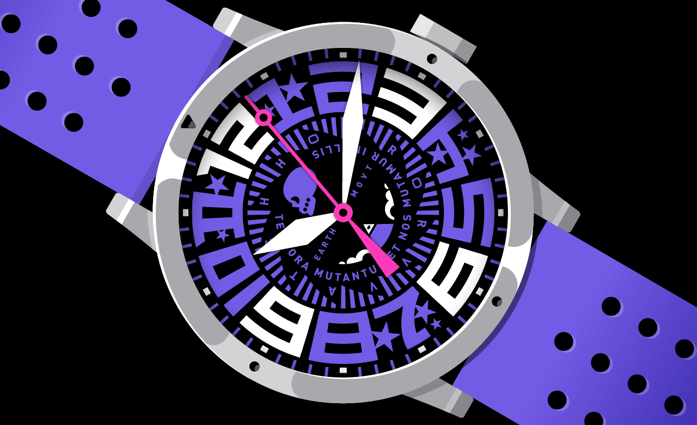
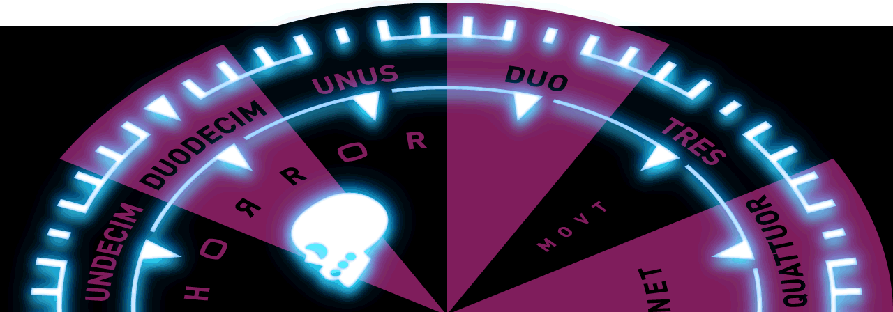
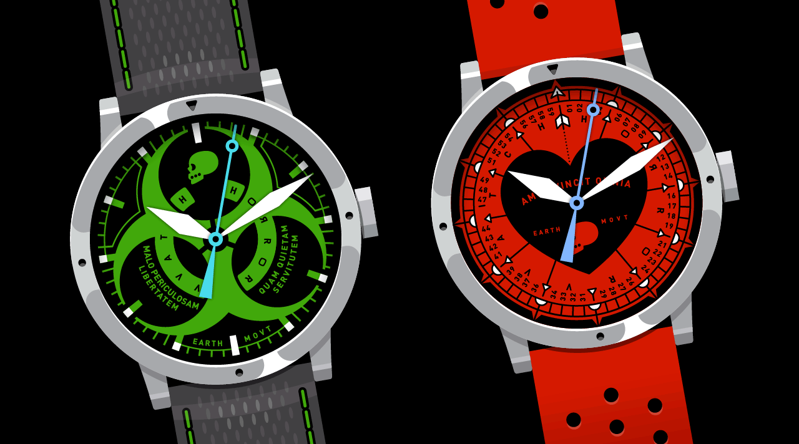
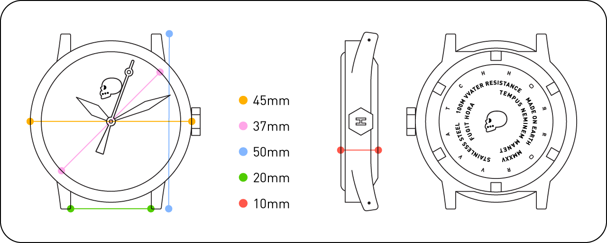
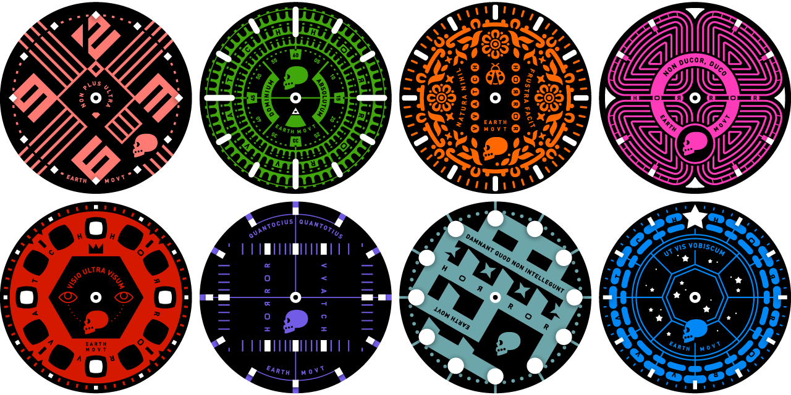

VVATCH Prime, HORROR’s first timepiece release, is our signature line of neo-retro pop gothic sports casual wristwatches, combining far-afield design exploration with zero-friction time-telling.
Solid, reliable, fascinating, mesmerizing, weird, confounding, unforgettable, delectable, familiar, unfamiliar, collectible, comfortable, and, last but not least, affordable.

A metal+crystal sandwich dial features lumed markers hovering just above the boldly colored dial. The result is a pleasing dimensionality that allows a more robust glow during eventime.

VVATCH Prime Series 1 consists of five individually color-themed watches, each featuring:
♦ 316L stainless steel case
♦ box sapphire crystal with anti-reflective undercoating
♦ Seiko mecha-quartz movement with sweeping seconds
♦ hexagonal screw-down crown
♦ BGW9 Super-LumiNova on hands + indices + other markings
♦ 100m water resistance
♦ 1 color-matched quick-release silicone band
♦ 1 quick-release sailcloth band with color-matched stitching


The designs for future VVATCH Prime series will be voted on by the community, from an ever-expanding collection of mind-expanding horological dial delights.

Strap on a VVATCH Prime and watch the conversations start. Make new friends!—while at the same time creating new HORROR customers. We thank you.
© MMXXV HORROR VVORKS Inc